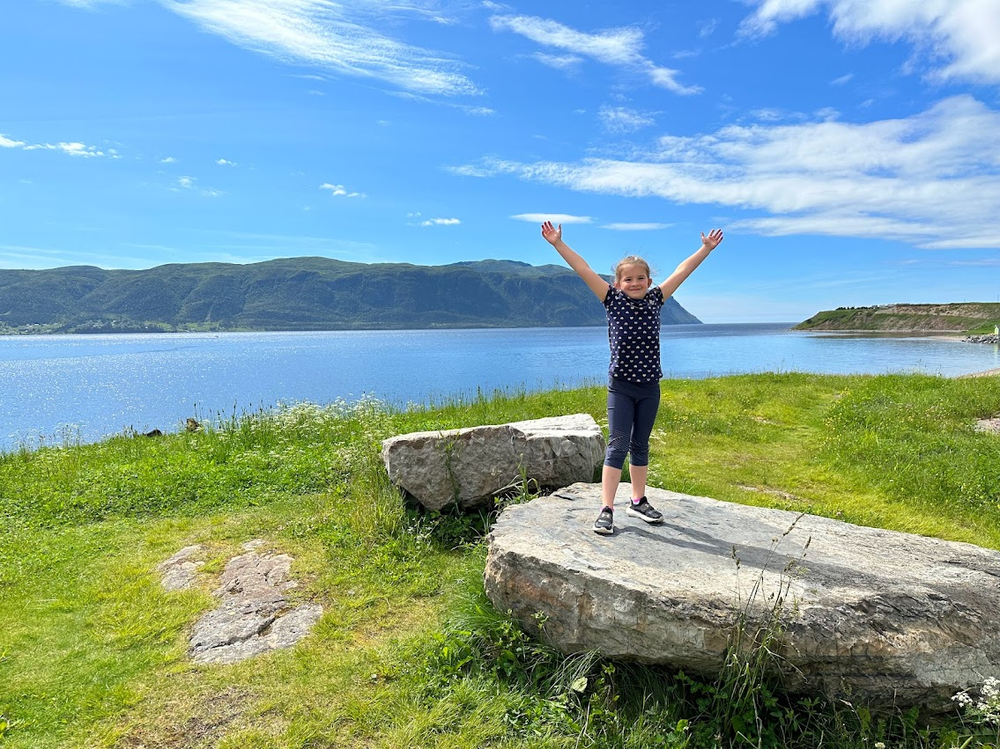
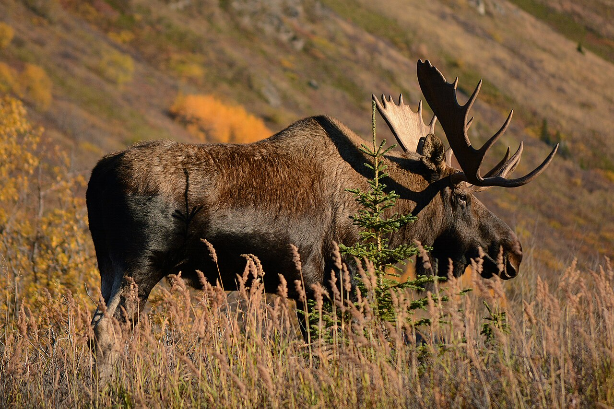
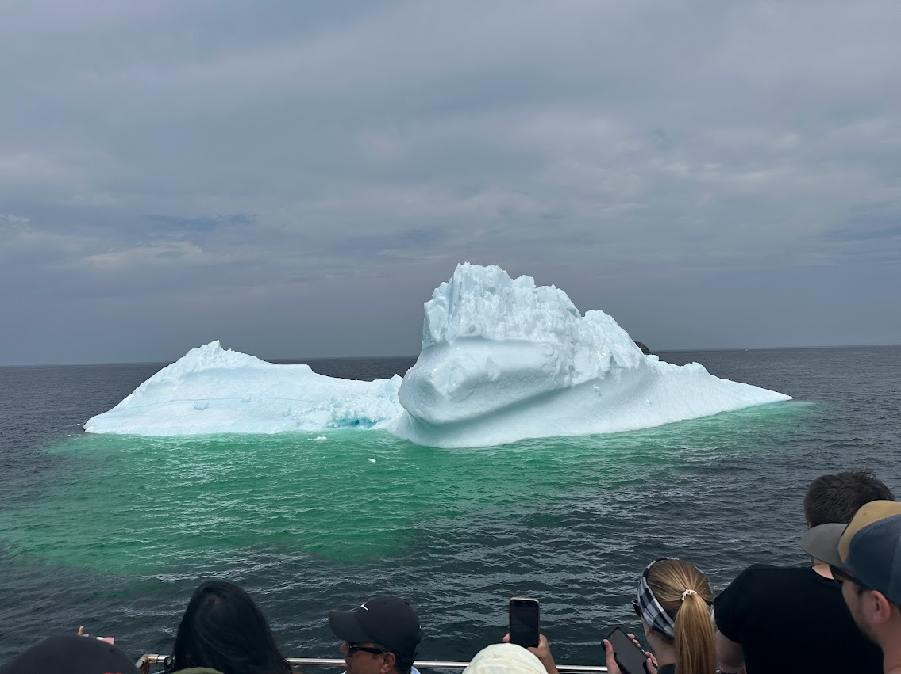
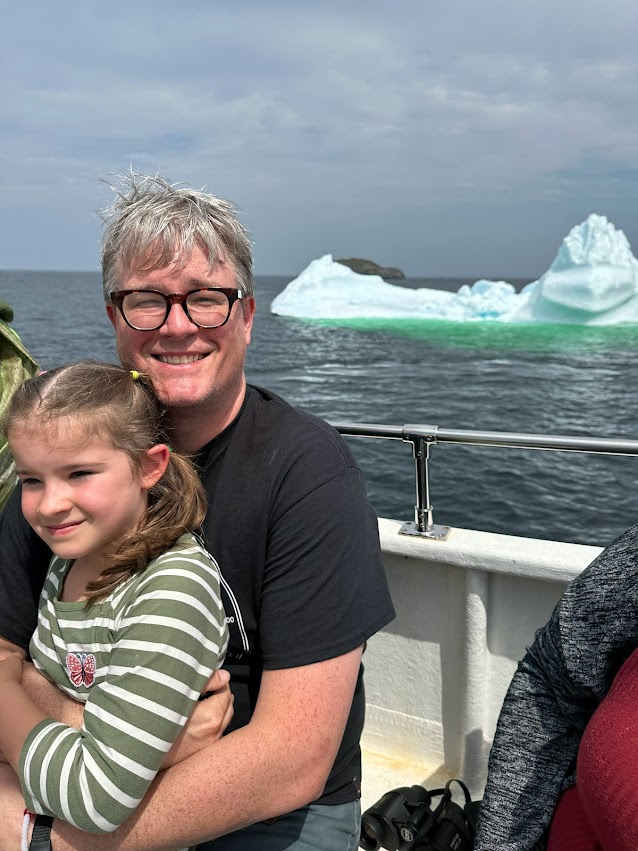
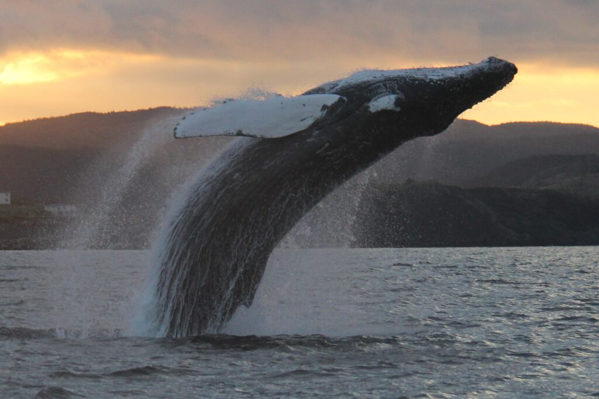
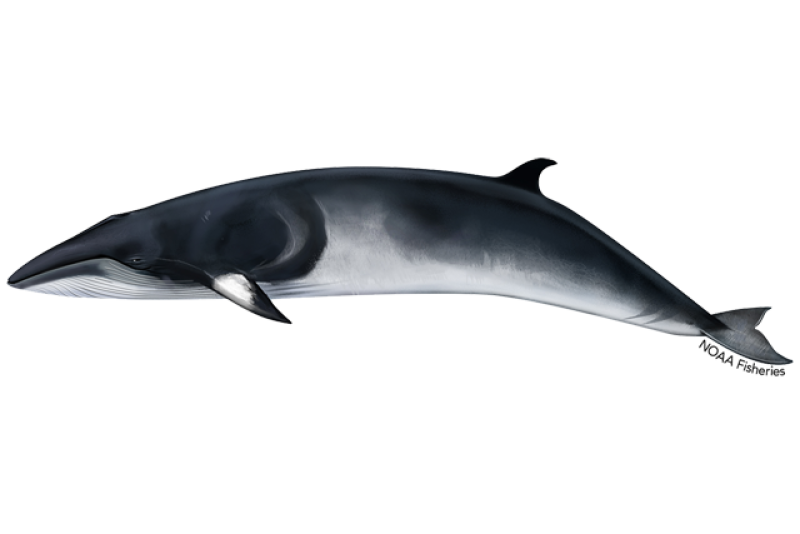

The Great Outdoors
Spotting giants of the sea and masters of the sky along the rugged Newfoundland coast.

The Mighty Moose!
Newfoundland is home to one of the largest moose populations in the world — and they are enormous. A full-grown bull moose can weigh over 500 kg and stand taller than 2 metres at the shoulder. That's taller than most ceilings!
How Large Are Moose Compared to Humans?
Floating Skyscrapers
Watch out! 90% of an iceberg is actually hidden under the water.

Iceberg Alley

Every spring, hundreds of ancient icebergs drift past Newfoundland's coast on their way south from Greenland. A website called IcebergFinder.com lets anyone track them in real time — using a mix of satellite images from NASA and the European Space Agency, and sightings uploaded by people standing on the shore.
10,000
Years old — the icebergs floating past NL today formed during the last Ice Age
400–800
Medium and large icebergs pass through Iceberg Alley every single year
90%
Of every iceberg is hidden below the surface — and it's even wider down there
150 ft
Tall — the famous 2017 iceberg that ran aground near Ferryland, taller than most buildings
Six Official Iceberg Shapes
- Block — Square with steep sides and a flat top
- Wedge — Flat surface that slopes from one end to the other
- Pinnacle — One or more peaks or spires, often pyramid-shaped
- Dry Dock — U-shaped, with a channel at water level between two columns
- Dome — Softly rounded on top
- Tabular — Very flat top, much wider than it is tall
Did you know? Iceberg Alley is the same stretch of ocean where the Titanic struck an iceberg and sank in 1912. It led 14 countries to create the International Ice Patrol to warn ships about icebergs ever since.
Best time to spot icebergs: late May to early June. The town of Twillingate, NL is unofficially known as the "Iceberg Capital of the World."
Giants of Newfoundland
Every summer, the cold, fish-rich waters off Newfoundland become a feeding ground for some of the largest creatures on Earth. Tap a whale to learn more!

Humpback Whale
Up to 17 m long · Leaps fully out of the water · Sings for hours

Minke Whale
Up to 8 m long · Fastest baleen whale · Very curious around boats

Orca
Up to 10 m long · Actually a dolphin · Sleeps with one eye open
Humpback Whale
Up to 17 m · Up to 40 tonnes
Humpbacks migrate from tropical breeding grounds to feed in Newfoundland's cold, capelin-rich waters every summer. They use a hunting trick called bubble-net feeding — blowing a spiral of bubbles underwater to trap fish, then lunging up with their mouths wide open!
- They can breach completely out of the water — imagine a school bus leaping into the air!
- Male humpback songs last over 30 minutes and can be heard for hundreds of kilometres
- Every humpback has a unique tail pattern — scientists use it like a fingerprint to identify individuals
- Their flippers can be 5 metres long — the longest of any animal on Earth
- Baby humpbacks are already 4 metres long at birth
Minke Whale
Up to 8 m · Up to 4 tonnes
Minke whales are sleek, fast, and usually travel alone. They love chasing capelin off Newfoundland — almost every minke studied in NL waters had been eating them. They're known to swim in circles and figure-eights when hunting!
- One of the smallest baleen whales — but still as long as a city bus is wide!
- They can swim up to 38 km/h — one of the fastest whales in the ocean
- Very curious animals — they will often swim right up to boats
- Scientists identify individual minkes by markings on their flippers
Orca (Killer Whale)
Up to 10 m · Up to 6 tonnes
Despite the name, orcas are actually the largest member of the dolphin family! They are apex predators — at the very top of the food chain — and eat fish, sharks, seals, and even other whales. They're also one of the most intelligent animals on Earth.
- Each orca pod has its own unique calls — like a family language passed down through generations
- They sleep with one half of their brain at a time so they never stop swimming
- An orca eats around 227 kg of food every single day
- Grandmothers play a crucial leadership role in the pod — older females guide the family
- They can live 60–90 years
Trouble On the High Sea!
A giant container ship is stuck on the rocks of Newfoundland — and it's not going anywhere soon.
What Happened?
On February 15, 2025, a massive cargo ship called the MSC Baltic III got caught in a huge storm off the west coast of Newfoundland. Hurricane-force winds pushed it right onto the rocks near a small community called Lark Harbour. Twenty crew members had to be airlifted to safety by helicopter — like a real-life rescue movie!
What Does It Look Like Now?
A whole year later, the ship is still sitting there — and it's getting worse. The hull is cracked, waves have coated it in ice, and the back of the ship has actually sunk to the ocean floor. The Canadian Coast Guard worked hard to pump out most of the ship's fuel oil and remove 409 of the 472 cargo containers on board to protect the ocean.
What Happens Next?
The ship is so badly damaged it probably can't be towed away in one piece. Workers are making plans to cut it apart right there on the rocks and haul the pieces out over land — through the small towns nearby. The mayor of Lark Harbour says it could take years to fully clean up!
CBC News: The MSC Baltic III — one year after running aground in Newfoundland
472
Cargo containers on board
20
Crew rescued by helicopter
409
Containers removed so far
1 yr+
And still stuck on the rocks